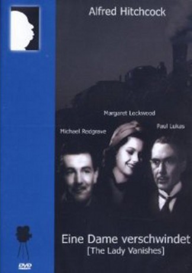

#3247 Eine Hitchcock - Dame verschwindet
Alternativ: The Lady Vanishes
 
 IMDB-Wertung: 7.9 / 10
IMDB-Wertung: 7.9 / 10  Metascore: 0
Metascore: 0 
In einem Landgasthof macht die junge Iris Henderson (Margaret Lockwood) die Bekanntschaft von Miss Froy (Dame May Whitty), einer älteren ehemaligen Gouvernante. Zusammen mit anderen Bahnreisenden sind die beiden zu dem Aufenthalt gezwungen, da eine Lawine die Schienen verschüttet hat. Als die Fahrt weitergeht, teilen sich Iris und Miss Froy ein Abteil mit einigen anderen Reisenden. Doch auf einmal ist die alte Dame verschwunden, und niemand will sie je gesehen haben. Zusammen mit den Mitreisenden Gilbert (Michael Redgrave) macht sich Iris auf die Suche...
Jahr: 1938
Dauer: 95 Minuten
FSK: 12
Land: England Studio: Concorde Home EntertainmentTonspuren:
Untertitel:
Auflösung: 720p (960x720) Größe: 4474 MB
Genre: Thriller, Komödie, Mystery
Regisseur:  Alfred Hitchcock
Alfred Hitchcock
Drehbuch: Ethel Lina White, Sidney Gilliat, Frank Launder
Soundtrack: Louis Levy, Charles Williams
Darsteller:
- Margaret Lockwood als Iris Henderson
 Michael Redgrave als Gilbert
Michael Redgrave als Gilbert- Paul Lukas als Dr. Hartz
- Dame May Whitty als Miss Froy
- Googie Withers als Blanche
 Alfred Hitchcock als Man in London Railway Station , uncredited
Alfred Hitchcock als Man in London Railway Station , uncredited Cecil Parker als Mr. Todhunter
Cecil Parker als Mr. Todhunter- Linden Travers als 'Mrs.' Todhunter
- Naunton Wayne als Caldicott
- Basil Radford als Charters
- Mary Clare als Baroness
- Emile Boreo als Hotel Manager
- Sally Stewart als Julie
- Philip Leaver als Signor Doppo
- Selma Vaz Dias als Signora Doppo
- Catherine Lacey als The Nun
- Josephine Wilson als Madame Kummer
- Charles Oliver als The Officer
- Kathleen Tremaine als Anna
- Ernest Blythe als Foreign Office Man , uncredited
- Roy Russell als Violinist , uncredited
Datei: X:\Person\Hitchcock\Hitchcock - Dame verschwindet, Eine (1938, FSK12, 960x720).mkv seit 21.02.2016
Festplatte: HD Collection-7+mehr(A-Z)+Person
 Es gibt insgesamt 25 Filme in der Gruppe 'Person\Hitchcock'
Es gibt insgesamt 25 Filme in der Gruppe 'Person\Hitchcock'